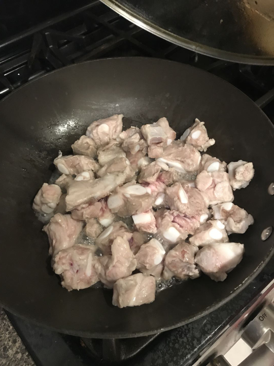
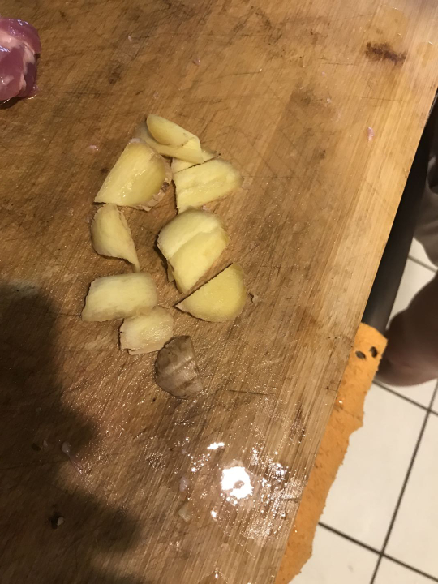
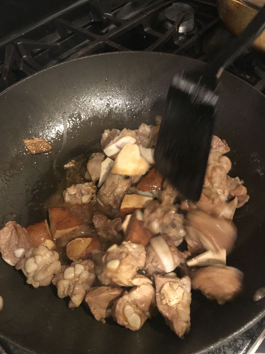
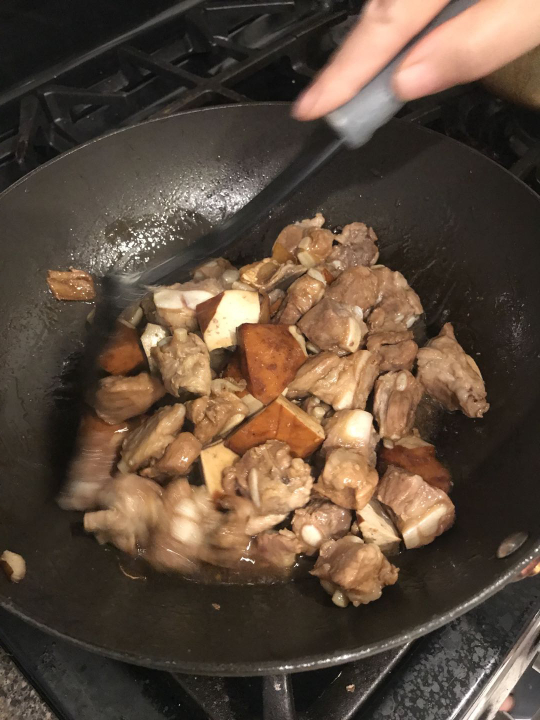

My number-one favorite dish growing up, Dad's Paigu was always a treat to find on the dinner table. He still refuses to give me the exact recipe, but here's a decent approximation.
| Ingredient | Approximate Amount |
|---|---|
| Ribs | However Much You Got From The Store |
| Cooking Wine | A Splash |
| Dark Soy Sauce | 1/2 the amount of Light Soy Sauce |
| Light Soy Sauce | 2x the amount of Dark Soy Sauce |
| Salt | A Sprinkle |
| Sugar | A Pinch |
- Throw the ribs into a pan with oil, then add cooking wine.

- Cut up the ginger while the ribs are cooking

- Throw the ginger into the pan and fry until the ribs are brown on the outside

- Fry until the sides are golden brown
- Turn the heat down and cover the pan for 5-10 minutes to allow the ribs to cook further
- Add dark soy sauce, light soy sauce, salt, and sugar

- Cover the pan again and let simmer for 10-20 minutes or however long you want, until tender.
- Serve!